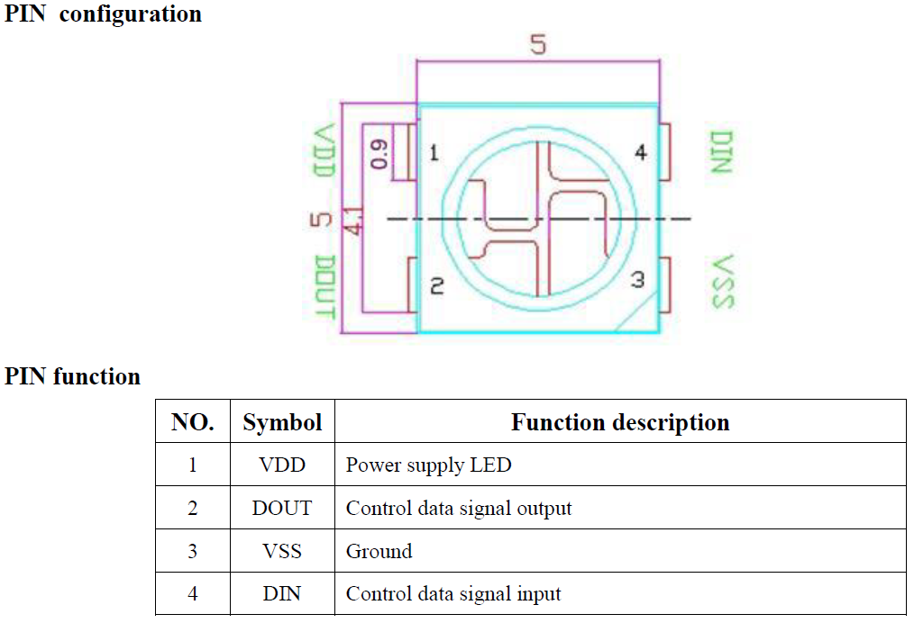
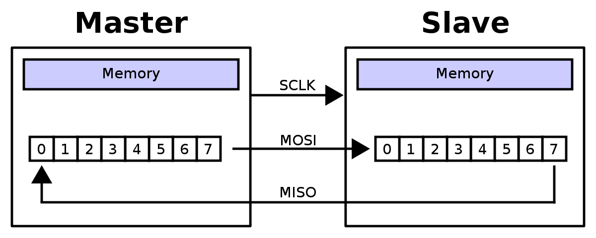
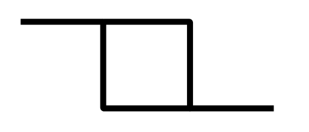
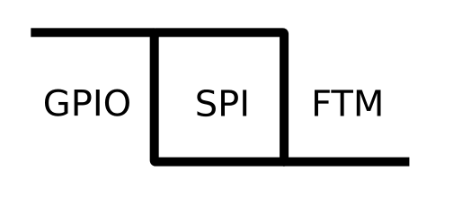
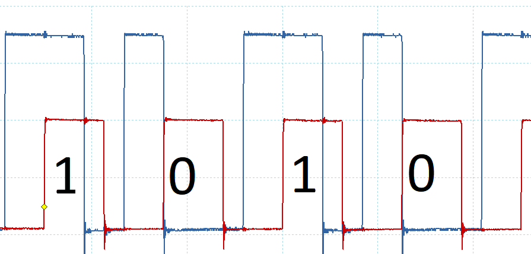

How To
OPTIMIZE
A SHITTY Light-Saber
Was soll dieser Vortrag zeigen?
Womit wird es gezeigt?
shitty?
Wieso genau damit?
- ein lustiges Beispielprojekt
- LED-Leiste übrig
- Devboard verfügbar (K64F)
- Holzreste auch
- Klebeband sowieso
Minimalanforderungen
- nach init Prozessorkern möglichst unbenutzt
- 120 LEDs 30Hz ansteuern (4m x 30LEDs/m)
How To
FAIL
A SHITTY Light-Saber
Die LEDs
- 4 x 30 LEDs vom Typ WS2812b
- 800 kBit/s-Bus
- 24bit-RGB-LED (8 Bit pro Farbe)
einzeln Betrachtet
Kaskadiert

SPI?
nope
Signal sieht anders aus...
nope
WS2801 wäre SPI......Lektion?
Studiert Datenblätter gründlich bevor ihr etwas kauftWS2812b ist aber beliebt!
Wie machen es die anderen?
ADAFRUIT NeoPixel (Arduino)
void rainbowCycle(uint8_t wait) {
uint16_t i, j;
for(j=0; j<256 * 5; j++) { // 5 cycles of all colors on wheel
for(i=0; i< strip.numPixels(); i++) {
strip.setPixelColor(i, Wheel(((i * 256 / strip.numPixels()) + j) & 255));
}
strip.show();
delay(wait);
}}ADAFRUIT NeoPixel (Arduino)
// Bit 7:
"out %[port] , %[hi]" "\n\t" // 1 PORT = hi
"mov %[n2] , %[lo]" "\n\t" // 1 n2 = lo
"out %[port] , %[n1]" "\n\t" // 1 PORT = n1
"rjmp .+0" "\n\t" // 2 nop nop
"sbrc %[byte] , 6" "\n\t" // 1-2 if(b & 0x40)
"mov %[n2] , %[hi]" "\n\t" // 0-1 n2 = hi
"out %[port] , %[lo]" "\n\t" // 1 PORT = lo
"rjmp .+0" "\n\t" // 2 nop nop
// Bit 6:
"out %[port] , %[hi]" "\n\t" // 1 PORT = hi
"mov %[n1] , %[lo]" "\n\t" // 1 n1 = lo
"out %[port] , %[n2]" "\n\t" // 1 PORT = n2
"rjmp .+0" "\n\t" // 2 nop nop
"sbrc %[byte] , 5" "\n\t" // 1-2 if(b & 0x20)
"mov %[n1] , %[hi]" "\n\t" // 0-1 n1 = hi
"out %[port] , %[lo]" "\n\t" // 1 PORT = lo
"rjmp .+0" "\n\t" // 2 nop nopZeitbedarf
- Übertragunsgeschwindigkeit: 800kbits/s bzw 100.000 Bytes/s
- 4x30 LEDs
- 24 Bit bzw 3 Byte Auflösung pro LED
- 60Hz Aktualisierung wäre nett
- 4x30x3x60 = 21.600 Bytes
- 21,6% CPU-Zeit blockiert fürs Senden!
DMA

mcuoneclipse-ws2812b-k64f-dma

mcuoneclipse-ws2812b-k64f-dma
int main(void) {
uint8_t red, green, blue;
DMA_Init();
for (;;) {
DMA_Transfer(transmitBuf, sizeof(transmitBuf));
}
/* Never leave main */
return 0;
}mcuoneclipse-ws2812b-k64f-dma
static uint8_t transmitBuf[NEO_NOF_PIXEL*NEO_NOF_BITS_PIXEL] =
{
/* pixel 0: */
1, 1, 1, 1, 1, 1, 1, 1, /* green */
0, 0, 0, 0, 0, 0, 0, 0, /* red */
0, 0, 0, 0, 0, 0, 0, 0, /* blue */
/* pixel 1: */
0, 0, 0, 0, 0, 0, 0, 0, /* green */
1, 1, 1, 1, 1, 1, 1, 1, /* red */
0, 0, 0, 0, 0, 0, 0, 0, /* blue */
/* pixel 0: */
0, 0, 0, 0, 0, 0, 0, 0, /* green */
0, 0, 0, 0, 0, 0, 0, 0, /* red */
1, 1, 1, 1, 1, 1, 1, 1 /* blue */
};
 source
source
Framebuffergröße
- Optimal: 4x30x3 = 360 Bytes
- Hier: 4x30x3x8 = 2.880 Bytes
- 700% extra Speicherplatz
Lektion?
Beliebte Komponenten sind nicht immer sinnvoll...Eine neue Implementierung
muss her

Vorgaben
- Keine CPU-Last
- Daten kompakt speichern
Idee!
Idee!
Anforderungen!
- 800.000 Bits/s Geschwindigkeit
- 3 Zustände pro Bit
- 2.400.000 Hz für Zustandswechsel
Wie implementiert?
- FTM2_CH0 (2,4MHz) -> DMA 2 -> Pinkonfig
- FTM3_CH0 (0,8MHz) -> DMA 1 -> SPI-write
Showdown
Was fehlt?
- nur festgelegte Anzahl schicken! (stoppt bisher nicht)
- mehr TESTEN!
Lösung?
- continues clock
- 7Bit!
- Nope!
Beispiel?
- 0b00000000 wird 0b00000001
- 0b01000000 wird 0b10000001
- 0b01111111 wird 0b11111111
Lektion?
- Studiert Datenblätter gründlich bevor ihr etwas implementiert
UART?

UART?
- Takt ist machbar
- Aber STOP-Bit
Lektionen?
- Datenblätter lesen
- Datenblätter lesen!!!!
- Triviale Sachen sind bei Bare Metal NIE trivial
- Nur weil etwas viel benutzt wird, ist es nicht zwangsläufig optimal (ws2801 vs ws2812b)
ByeBye?
Was haben wir gesehen / mitbekommen?
- Prozessorkern schlecht, DMAs gut
- Timer sind Zeitkritischer!
- Arrays in C sind doof
Array
// C Funktionsaufruf
DMA_Transfer(transmitBuf, sizeof(transmitBuf)); // Template + C-Array
template<unsigned I>
void DMA_Transfer(uint8_t (&DATAARRAY) [I]) {}
uint8_t werte[] = {1,2,4,5};// std::array
template<std::size I>
void DMA_Transfer(std::array<uint8_t,I> & DATAARRAY) {}
std::array<uint8_t,4> biersalat = {1,3,5,7};Init Timer
auto constexpr clock_init = write(
Kvasir::SimScgc3::Ftm3ValC::v1,
Kvasir::SimScgc3::Ftm2ValC::v1,
Kvasir::SimScgc6::Ftm2ValC::v1
);Init Timer
constexpr auto init_ftm2 = Kvasir::MPL::list(
write(Kvasir::Ftm2C0sc::DmaValC::v1, // enable dma request :)
Kvasir::Ftm2C0sc::ChieValC::v1),
set(Kvasir::Ftm2C0sc::elsa, Kvasir::Ftm2C0sc::elsb,
Kvasir::Ftm2C0sc::msa) ,
write(Kvasir::Ftm2Mod::mod, Kvasir::Register::value<(5)-1>()),
write(Kvasir::Ftm2Sc::ClksValC::v01,
Kvasir::Ftm2Sc::PsValC::v000)); // start through clock (system clock)Init Timer
apply(gpio::clock_init,
spi::clock_init,
ftm::clock_init,
pit::clock_init);
apply(ftm::init_ftm2);
DMAs?
Analog dazu aber viel viel viel widerlicher\0
- Twitter: @Sickeroni
- Github: Sickeroni